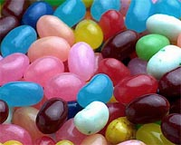
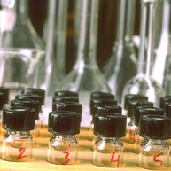
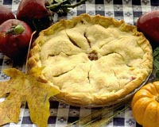

|

Are Food Additives Safe? We buy food, and we consume food and we wonder if what we are eating is really safe for us. Someone must have set regulations for the foods we eat - at least the food manufactured, processed and sold in stores. The control of food additives in Canada is the responsibility of the Health Protection Branch. Only food additives listed in the Food Additives Tables in the Food and Drug Regulations are permitted to be used in food. The use of an additive is not allowed if it is considered a hazard in the amounts that it would be present in food., The Food and Drug Administration in the United States regulates the food additives for the industry there and similar guidelines are adhered to. The following is taken from "Food Additives" by Health and Welfare Canada.  Additive Testing The studies and data required for the evaluation of an additive include biochemical and physiological tests, subacute and chronic toxicity studies and reproduction studies From these investigations, a dosage that causes no demonstratable effect in animals may be ascertained. Then the Acceptable Daily Intake (ADI) for humans is calculated by dividing the "no-effect level" in the most sensitive animal species by a large safety factor, usually 100. Once the ADI is established, the Probable Daily Intake of this additive by the Canadian population is estimated. Comparison of the Probable Daily Intake with the ADI allows a rational decision to be made regarding the safety of a given additive for a proposed use. Estimating the Probable Daily Intake of a food additive is an important part of the evaluation process. Accurate additive intake calculations require accurate foor consumption estimates. Estimates of the consumption of a particular food commodity Canadians in a given age group are often based on information provided by such domestic sources as the Nutrition Canada Survey. Depending on the techniques used to determine additive intake, estimates can be further supplemented by data obtained from other sources including industry-generated results, surveys carried out in other countries and domestic food consumption figures supplied by Statistics Canada. Such diverse sources of data help to ensure the accuracy of the intake estimates. It should be noted that questions of toxicity are an international concern, and the Food and Agriculture Organization World Health Organization Joint Expert Committee on Food Additives meets regularly to evaluate the toxicity of food additives. The recommendations of the expert committee are always taken into account in reviewing submissions presented by manufacturers. Additives are also being continually reviewed by the Heath Protection Branch. If new data provides evidence that the use of a particular additives poses a hazard to the consumer, a recommendation is made to have it removed from the Food Additive Tables. Guinea green, diethyl pyrocarbonate, and saccharin are examples of additives which have been deleted in recent years. Meanwhile, there has been considerable critisism of the use of food additives, both in Canada and internationally. But without additives, many food products could not be offered for sale in their present forms, and the remaining products would be much more expensive. The use of additives has made possible much of the variety o and convenience found in our food supply. Moreover, if food production is to keep pace with population growth and the effort to improves general nutrition in undernourished areas, the use of food additives will become increasingly important. |